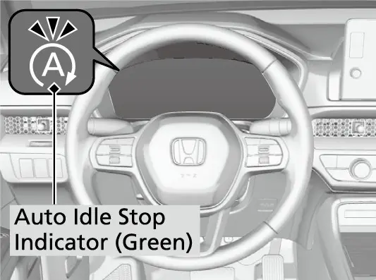
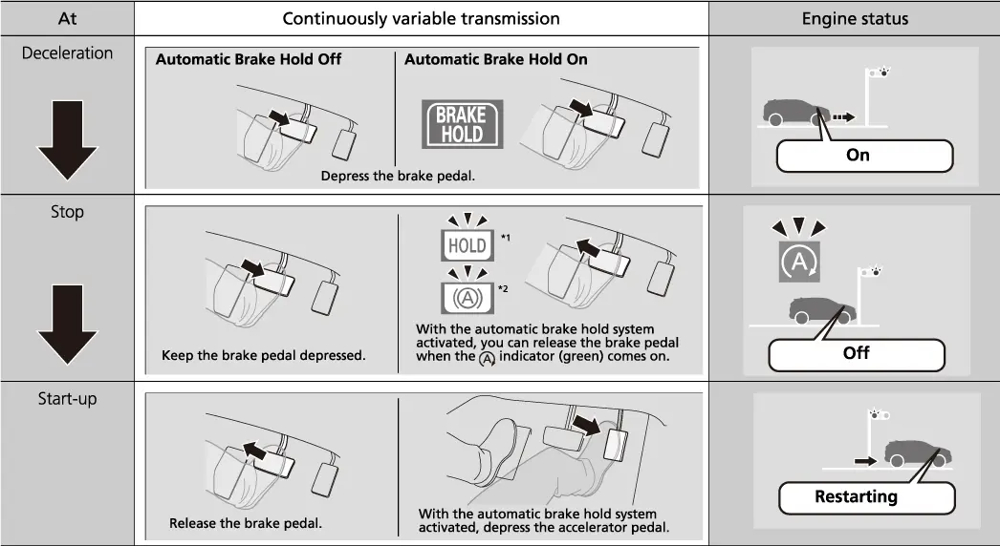
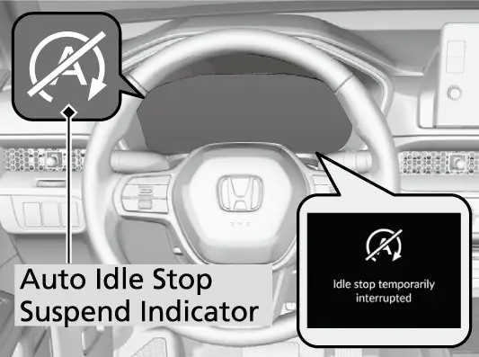
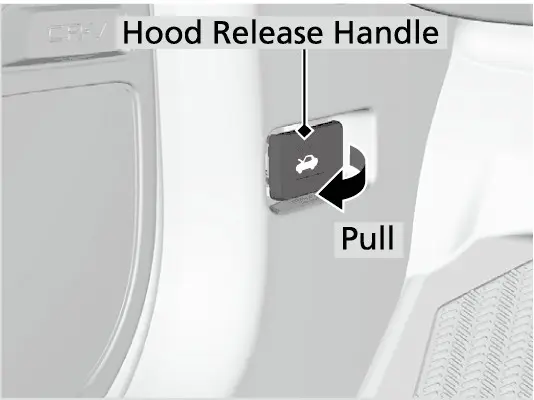
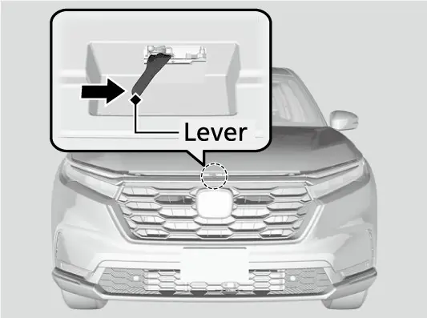
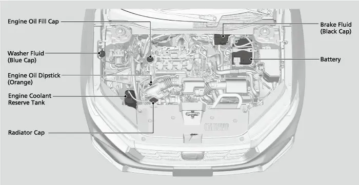
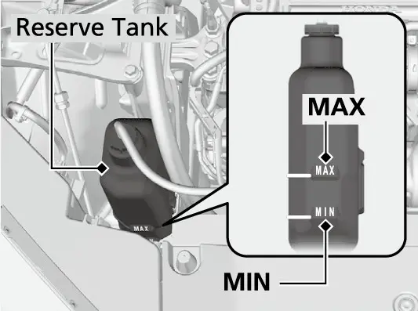
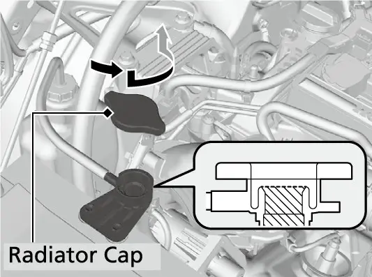
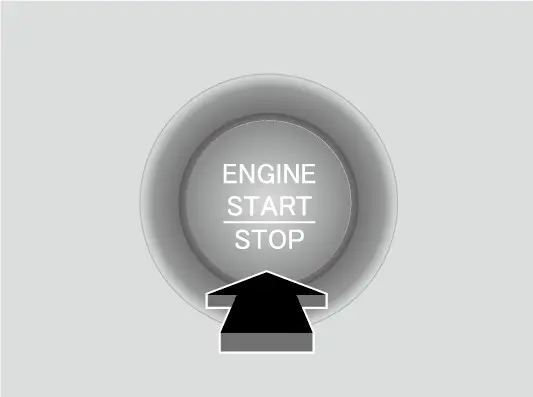
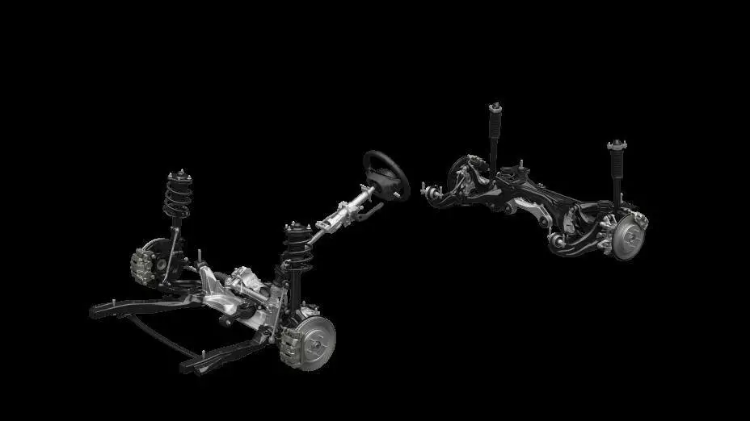

קאפיטל 3
מאטאר און מעכאנישע סיסטעמען
זייטן 43–56 אינעם PDF
דער בענזין-מאטאר סיסטעם אין קורצן
דער קאפיטל באהאנדלט די טיילן פון דעם CR-V EX וואס מאכן אים פארן: דער מאטאר, די טראנסמישן, דער דרייוו סיסטעם און די שאסי. יעדע נומער דא קומט פון Honda'ס אפיציעלע ליסטע פון ספעציפיקאציעס אדער פונעם אונער'ס מאנואל. ווען דער קאפיטל ערקלערט אין אלגעמיין ווי א טעכנאלאגיע ארבעט, זאגט ער דאס קלאר. דער EX האט דעם זעלבן בענזין-סיסטעם וואס Honda ניצט אין דעם LX און EX-L: א 1.5 ליטער טורבא מאטאר מיט 4 צילינדערס, מיט א continuously variable transmission (CVT, א טראנסמישן אן פעסטע גאנגען). די היבריד מאדעלן ניצן א גאנץ אנדערן 2.0 ליטער סיסטעם, דערפאר באציט זיך היבריד אינפארמאציע נישט צו אייער קאר.
מאטאר ספעציפיקאציעס (EX)
| זאך | ספעציפיקאציע |
|---|---|
| מאטאר טיפ | 4 צילינדערס אין א רייע, מיט טורבא |
| וואלומען | 1,498 cc (91.38 cu in) |
| כח (SAE net) | 6,000 rpm @ 190 |
| טארק (SAE net) | 179 lb-ft @ 1,700-5,000 rpm |
| העכסטע דרייונגען (Redline) | 6,600 rpm |
| וואלוו סיסטעם | 16-valve DOHC VTEC |
| צילינדער ברייט × קלאפ | 73 × 89.5 mm |
| קאמפרעסיע | 10.6 |
| בענזין סיסטעם | דירעקטע אינדזשעקשן |
| ספארק פלאגס | NGK DILKAR8P8SY |
טארק איז די דרייענדיקע קראפט וואס ברענגט דעם קאר אין באוועגונג. די מאקסימום טארק קומט שוין ביי 1,700 rpm און האלט אן ביז 5,000 rpm, און די ברייטע, גלייכע טארק-געגנט איז וואס איר שפירט יעדן טאג. ווען איר פארט אוועק פון א ליכט אדער פארט אריין אויף א הייוועי, גיט דער מאטאר זיין פולע ציען-קראפט אן הויכע דרייונגען. דער אונער'ס מאנואל פארלאנגט unleaded בענזין מיט א פאמפ octane נומער פון 87 אדער העכער. בענזין און שפארעוודיקייט ווערן באהאנדלט אין קאפיטל 4.
ווי דער טורבא ארבעט
Honda'ס feature guide באשרייבט דעם טורבא אזוי: א טורבינע-ראד זיצט אינעם עגזאסט סיסטעם, און דער שטראם פון עגזאסט-גאז דרייט עס. די טורבינע דרייט א שטאנג, און די שטאנג דרייט א לופט-פאמפ ביים לופט-אריינגאנג פונעם מאטאר. דער עקסטערער דרוק שטופט מער לופט און בענזין אריין אין יעדע ברען-קאמער, און אזוי גיט יעדע אנצינדונג מער כח. אזוי קען א קליינער, שפארעוודיקער מאטאר מאכן די טארק פון א גרעסערן. נאך צוויי טיילן העלפן דעם טורבא. ווען מען דריקט צוזאם לופט ווערט זי הייס, און הייסע לופט האט ווייניגער אקסיגען. אן intercooler (א לופט-אפקילער) אויפן וועג פון דער לופט קילט אפ די צוזאמגעדריקטע לופט, און אזוי באקומט דער מאטאר געדיכטערע לופט צו ברענען. צו פיל boost דרוק קען גורם זיין detonation, דאס הייסט אן אומקאנטראלירטע ברענונג פון דער לופט-בענזין מישונג. כדי דאס צו פארמיידן, קען א סענסאר ביי דער לופט-זייט עפענען א ווענטיל אינעם עגזאסט וואס הייסט wastegate. דער wastegate לאזט א טייל עגזאסט גיין ארום דער טורבינע, וואס פארלאנגזאמט די טורבינע און נידעריגט דעם דרוק. דאס אלעס געשעט אויטאמאטיש, און איר דארפט גארנישט איינשטעלן.
בענזין אינדזשעקשן און וואלוון
Honda'ס ספעציפיקאציעס באשטעטיגן דירעקטע אינדזשעקשן. אין אלגעמיין שפריצן די אינדזשעקטארס דעם בענזין גלייך אריין אין יעדן צילינדער אנשטאט אין דעם לופט-אריינגאנג, וואס דערמעגליכט זייער גענויע בענזין-צושטעל. DOHC מיינט double overhead camshaft: צוויי קעמשאפטס אויבן אויפן מאטאר עפענען די 16 וואלוון, פיר פאר יעדן צילינדער. לויט Honda'ס feature guide האט דער מאטאר Variable Timing VTC(Control, וועקסלענדיגע צייט-קאנטראל) אויף ביידע קעמשאפטס, און דערצו VTEC אויף די עגזאסט וואלוון. אין אלגעמיין טוישן די סיסטעמען ווען די וואלוון עפענען זיך, און מיט VTEC אויך ווי אזוי זיי עפענען זיך, לויט די מאטאר-דרייונגען. Honda פארעפנטלעכט נישט ביי וועלכע פונקטן עס טוישט זיך.
די CVT טראנסמישן
דער כח קומט צו די רעדער דורך א continuously variable transmission, וואס איר קאנטראלירט מיט א געווענליכן שיפט לעווער. די היבריד מאדעלן ניצן אנשטאט דעם קנעפלעך צו שיפטן. אין אלגעמיין האט א CVT קיין פעסטע גאנגען. זי טוישט איר פארהעלטעניש גלאט, אזוי אז איר שפירט נישט קיין שיפט-פונקטן. Honda'ס feature guide זאגט אז די CVT האלט דעם מאטאר ביי די בעסטע rpm. זי איז אויך לייכטער, קאמפאקטער, און קען האנדלען מער טארק ווי א טיפישע אויטאמאטישע טראנסמישן. Honda'ס G-Design Shift פארבינדט די CVT נענטער מיט איר torque converter. דאס פארמיידט דאס איבעריגע אויפדרייען וואס איז געווענליך ביי CVTs, אזוי אז דאס גיכער ווערן שפירט זיך מער גלייכמעסיג און דער מאטאר דרייט זיך אויס ווייניגער.
CVT ספעציפיקאציעס
| זאך | ספעציפיקאציע |
|---|---|
| פארהעלטעניש-ראנזש | 2.645 ~ 0.405 |
| צוריק (Reverse) | 2.645 ~ 1.800 |
| לעצטע דרייוו (Final drive) | 5.640 |
| באשטימטע פליסיגקייט | Honda HCF-2 |
| טויש-מאס, 2WD | 3.7 US qt (3.5 L) |
| טויש-מאס, AWD | 4.1 US qt (3.9 L) |
א העכערע פארהעלטעניש גיט מער ציען-קראפט ביי נידעריגע גיכקייט. א נידעריגערע פארהעלטעניש גיט א רואיגע פאר מיט נידעריגע rpm.
קריכן און kickdown
דער מאנואל באשרייבט צוויי אויפפירונגען פון דער CVT. די ערשטע איז קריכן (creeping): אין D שטופט זיך דער קאר פאמעלעך פאראויס פון זיך אליין. ווען דער מאטאר לויפט ליידיג מיט א העכערע גיכקייט, למשל ווען ער איז קאלט, ווערט די קריך-קראפט שטארקער. האלט דעם פוס פעסט אויפן ברעמז ווען איר שטייט, אדער מאכט זיכער אז די אויטאמאטישע brake hold איז אן. Brake hold (די ברעמז-האלט פונקציע) ווערט באהאנדלט אין קאפיטל 17.

די צווייטע אויפפירונג איז kickdown (שנעל אראפגיין צו א נידעריגערע פארהעלטעניש). אויב איר דריקט שנעל אויפן גאז, בפרט ווען איר פארט ארויף א בארג, קען די טראנסמישן אראפגיין צו א נידעריגערע פארהעלטעניש און דער קאר קען אומגעריכט גיכער ווערן. דריקט פארזיכטיג אויפן פעדאל, בפרט אויף גליטשיגע וועגן און אין קורוון.
פארנט-רעדער דרייוו אדער Real Time AWD
פארנט-רעדער דרייוו איז סטאנדארט אויפן EX. Real Time AWD with Intelligent Control System (פיר-רעדער דרייוו מיט קלוגע קאנטראל) איז צו באקומען אלס אפציע. אייערע קויף-פאפירן באשטעטיגן וועלכע פון זיי אייער קאר האט.
EX אונטערשיידן: 2WD קעגן AWD
| זאך | 2WD | AWD |
|---|---|---|
| וואג (ליידיג) | 3,497 lb | 3,616 lb |
| הייך פון דער ערד (ליידיג) | 7.8 in | 8.2 in |
| הייך | 66.2 in | 66.5 in |
| ווינקלען פארנט / הינטן | °21.3° / 17.1 | °22.1° / 17.7 |
| רעדער-ברייט פארנט / הינטן | 63.4 / 64.1 in | 63.3 / 63.9 in |
| EPA שטאט / הייוועי / צוזאמען | 28 / 33 / 30 mpg | 27 / 31 / 29 mpg |
ווי דער AWD סיסטעם ארבעט
לויט דעם אונער'ס מאנואל טרייבט דער AWD סיסטעם נארמאל די פארנטיגע רעדער. ווען ער שפירט אז די פארנטיגע רעדער פארלירן דעם אנכאפ, שיקט ער אויטאמאטיש א טייל כח צו די הינטערשטע רעדער, און אזוי קען דער קאר ניצן דעם גאנצן אנכאפ וואס איז דא. Honda'ס feature guide לייגט צו אז דער סיסטעם ווערט עלעקטראניש אקטיווירט. ער קען אויך שיקן כח צו די הינטערשטע רעדער פון פאראויס, ווען איר גיט גאז אדער פארט ארויף א בארג, כדי צו העלפן פארמיידן גליטשן פון אנפאנג אן. Honda זאגט אז דער סיסטעם איז ספעציעל פארבעסערט געווארן פאר שניי. אין קורוון פארשיבט ער טארק צווישן די פארנטיגע און הינטערשטע רעדער פאר בעסערע סטאביליטעט. דער סיסטעם ארבעט אינגאנצן אויטאמאטיש. דרייוו מאדָעס, אריינגערעכנט SNOW, ווערן באהאנדלט אין קאפיטל 14.
AWD גרענעצן פונעם מאנואל
אפילו מיט AWD דארפט איר די זעלבע פארזיכטיגקייט ביים גאז געבן, דרייען און ברעמזן ווי אין א קאר מיט צוויי-רעדער דרייוו. אויב איר לאזט צופיל דרייען אלע פיר רעדער און דער סיסטעם ווערט איבערהייצט, באקומען נאר די פארנטיגע רעדער כח. אויב דאס געשעט, שטעלט זיך אפ ביז דער סיסטעם קילט זיך אפ.
Auto Idle Stop
דער EX האט Idle-Stop, וואס דער מאנואל רופט Auto Idle Stop (אויטאמאטיש אפשטעלן דעם מאטאר ביים שטיין). כדי צו שפארן בענזין, לעשט זיך דער מאטאר אויס ווען איר שטעלט זיך אפ, און ער צינדט זיך ווידער אן ווען איר זענט גרייט צו פארן. Honda'ס feature guide זאגט אז דאס געשעט ווען איר ברעמזט ביז צום אפשטעלן פאר כאטש צוויי סעקונדעס. בשעת דער מאטאר איז אזוי אפגעשטעלט, ברענט דער גרינער Auto Idle Stop אינדיקאטאר. אויב דער סיסטעם קען זיך נישט אקטיווירן, צינדט זיך אן דער suspend אינדיקאטאר און א מעלדונג ווייזט זיך אויפן driver information interface (דער אינפארמאציע-דיספליי פארן דרייווער). אויב איר עפנט דעם דרייווער'ס טיר בשעת דער מאטאר שטייט, דערמאנט אייך א באזער אז Auto Idle Stop ארבעט.



דער סיסטעם ווערט אקטיוו ווען איר שטעלט זיך אפ אין D מיטן ברעמז פעדאל אנגעדריקט. אויב איר שיפט דערנאך שנעל צו P בשעת איר האלט דעם ברעמז, ארבעט ער ווייטער אפילו נאכדעם וואס איר לאזט אפ דעם ברעמז. אין אזא פאל קען דריקן דעם ברעמז ווידער אנצינדן דעם מאטאר.
ווען Auto Idle Stop ווערט נישט אקטיוו
- מען האט געדריקט דעם Auto Idle Stop OFF קנעפל.
- דער דרייווער'ס סיט בעלט איז נישט אנגעשפיליעט.
- דער מאטאר איז נישט גענוג אנגעווארעמט, אדער די קולאנט טעמפעראטור איז הויך.
- די טראנסמישן פליסיגקייט טעמפעראטור איז נידעריג אדער הויך.
- דער קאר שטעלט זיך ווידער אפ איידער ער דערגרייכט 3 mph (5 km/h) נאכן אנצינדן דעם מאטאר.
- דער קאר שטייט אויף א שטאציגן בארג, אדער די טראנסמישן איז נישט אין D.
- דער מאטאר איז אנגעצונדן געווארן מיט אן אפענער האוד. לעשט אויס דעם מאטאר, מאכט צו די האוד, דערנאך צינדט ווידער אן.
- די באטעריע איז נידעריג געלאדן, אדער די אינעווייניגע טעמפעראטור פון דער באטעריע איז 41°F (5°C) אדער ווייניגער.
- די קליימעט קאנטראל ארבעט און די דרויסנדיגע טעמפעראטור איז אונטער 4°F (−20°C)− אדער איבער 104°F (40°C), אדער די טעמפעראטור איז געשטעלט אויף Hi אדער Lo.
- דער שויב-defroster (אפטוי פון דער פארנטיגער שויב) איז אן, אדער דער דרייוו מאדָ איז SNOW.
דער סיסטעם קען זיך אויך נישט אקטיווירן נאך א פלוצלינגדיגן אפשטעל, בשעת איר דרייט דעם סטירינג, ביי איבערגעחזרטע גאז געבן און ברעמזן ביי נידעריגע גיכקייט, מיט א הויכע פענ-גיכקייט, ווען אינעווייניג איז ווייט פון דער געשטעלטער טעמפעראטור אדער זייער פייכט, און אויף א הויכע הייך. אין ECON מאדָ בלייבט דער מאטאר לענגער אויסגעלאשן ווען די קליימעט קאנטראל ארבעט.

ווען דער מאטאר צינדט זיך ווידער אן
אן brake hold אקטיוו, צינדט זיך דער מאטאר אן ווען איר לאזט אפ דעם ברעמז. מיט brake hold אקטיוו, צינדט ער זיך אן ווען איר דריקט אויפן גאז. ער צינדט זיך אויך אן פון זיך אליין, אפילו מיטן ברעמז אנגעדריקט, אין יעדן פון די פעלער: איר דריקט דעם OFF קנעפל, דרייט דעם סטירינג, שיפט צו R, S אדער L, אדער שיפט פון N צו D. ער צינדט זיך אויך אן אויב איר לאזט א ביסל אפ דעם ברעמז, אויב דער קאר הייבט אן צו קייקלען זיך אויף א שיפוע, אויב איר דריקט אויפן גאז, אדער אויב איר שפיליעט אויף דעם סיט בעלט. נידעריגע באטעריע-לאדונג, ניצן דעם defroster, אפטרוקענען די לופט, א גרויסער אונטערשייד צווישן דער געשטעלטער און דער אמת'ער טעמפעראטור אינעווייניג, טוישן צו SNOW מאדָ, אדער ווען דער קאר פאר אייך פארט אוועק בשעת אן Adaptive Cruise Control אפשטעל, וועלן אים אויך ווידער אנצינדן. אויב איר שיפט פון D אדער N צו P אויף א שיפוע, צינדט זיך דער מאטאר אן. ווען דער מאטאר צינדט זיך ווידער אן, האלט א starting assist פונקציע (אנצינד-הילף) אויף א קורצע צייט די ברעמזן, אזוי אז דער קאר זאל זיך נישט קייקלען אויף א שיפוע. עלעקטראנישע מכשירים קענען זיך אויסלעשן אויף א רגע בשעת'ן ווידער אנצינדן.
אויסלעשן דעם סיסטעם
כדי אויסצולעשן דעם סיסטעם, דריקט דעם Auto Idle Stop OFF קנעפל לעבן דעם שיפט לעווער. ער איז באצייכנט מיטן אות A אינעווייניג אין א רונדן פייל. דער אינדיקאטאר צינדט זיך אן און א מעלדונג ווייזט זיך. אויב דער מאטאר שטייט אין יענעם מאמענט, צינדט ער זיך ווידער אן. דער סיסטעם קומט צוריק אן יעדעס מאל וואס איר צינדט אן דעם מאטאר. דריקט און האלט דעם קנעפל צו אויסוועלן צי מען זאל ווייזן סטאטוס מעלדונגען.

אונטער דער האוד
עפענען און צומאכן די האוד
- פארקירט אויף א גלייכן פלאץ און שטעלט אן דעם פארקינג ברעמז.
- מאכט זיכער אז די ווייפער-ארעמס זענען אראפ, ווייל די האוד וועט זיך אנשלאגן אין אויפגעהויבענע ווייפערס און קען ביידע קאליע מאכן. מאכט אויך זיכער אז Auto Idle Stop האט נישט אפגעשטעלט דעם מאטאר.
- ציט דעם האוד האנטל אונטער דעם נידעריגן עק פונעם דעשבארד ביי דער דרייווער'ס זייט. די האוד שפרינגט א ביסל ארויף.
- גרייכט אונטער דער מיטן פון דער פארנטיגער קאנט פון דער האוד און שטופט דעם לאטש-לעווער אויף דער זייט. הייבט א ביסל די האוד, דערנאך לאזט אפ דעם לעווער.
- הייבט די האוד רוב פונעם וועג. די הידראולישע שטיצן הייבן זי דעם רעשט פונעם וועג און האלטן זי אפן.
- צום צומאכן, לאזט אראפ די האוד ביז בערך 12 אינטשעס (30 cm), דערנאך דריקט שטארק אראפ מיט די הענט. טשעקט אז זי איז גוט פארשלאסן.

אויב דער לאטש-לעווער באוועגט זיך שווער, אדער די האוד עפנט זיך אן דעם וואס איר הייבט דעם לעווער, לאזט אויסרייניגן און אויסשמירן דעם לאטש מעכאניזם.

דער אונער'ס מאנואל האט א מאפע פון די מעינטענענס-טיילן אונטער דער האוד, וואס ווייזט די פונקטן וואס א בעל הבית טשעקט טאקע.

טשעקן דעם מאטאר קולאנט
Honda רעקאמענדירט צו טשעקן דעם קולאנט (קיל-פליסיגקייט) יעדעס מאל וואס איר פילט אן בענזין, ווען דער מאטאר און די ראדיאטאר זענען קאלט. דער באשטימטער קולאנט איז Honda Long Life Antifreeze/Coolant Type 2. ער קומט שוין צוגעמישט 50% antifreeze און 50% וואסער, דערפאר לייגט קיינמאל נישט צו לויטערן antifreeze אדער פשוט'ע וואסער. די מישונג שוצט ביז בערך 31°F (−35°C)−. אויב דער קאר איז אפט אין קעלטערע טעמפעראטורן, פרעגט א דילער וועגן פארגרעסערן די antifreeze קאנצענטראציע. אויב Honda קולאנט איז נישטא, קענט איר צייטווייליג ניצן אן אנדערן באוואוסטן ברענד פון non-silicate קולאנט וואס איז געמאכט פאר אלומיניום מאטארן. לאזט דעם סיסטעם אויסשווענקען און אנפילן מיט Honda קולאנט וואס גיכער, ווייל לאנגע צייט ניצן נישט-Honda קולאנט קען גורם זיין זשאווער. לייגט נישט צו קיין rust inhibitors אדער אנדערע צוגאבן.
טשעקן דעם רעזערוו טאנק
- מאכט זיכער אז דער מאטאר און די ראדיאטאר זענען קאלט.
- טשעקט דעם קולאנט שטאנד אינעם רעזערוו טאנק.
- אויב דער שטאנד איז אונטער דעם MIN צייכן, לייגט צו דעם באשטימטן קולאנט ביז צום MAX צייכן.
- באקוקט דעם קיל-סיסטעם פאר לעקן.

טשעקט די ראדיאטאר אליין נאר אויב דער רעזערוו טאנק איז אינגאנצן ליידיג.
טשעקן די ראדיאטאר
- ווען אלעס איז קאלט, דרייט די radiator cap 1/8 דריי קעגן דעם זייגער כדי ארויסצולאזן דעם דרוק.
- דריקט אראפ דעם דעקל און דרייט אים קעגן דעם זייגער כדי אים ארויסצונעמען.
- דער קולאנט דארף דערגרייכן ביז צום אונטן פונעם אנפיל-האלדז. לייגט צו קולאנט אויב ער איז נידעריג.
- לייגט צוריק דעם דעקל און דרייט אים גאנץ צו.

פליסיגקייט ספעציפיקאציעס פונעם אונער'ס מאנואל
| פליסיגקייט | ספעציפיקאציע | מאס |
|---|---|---|
| מאטאר אויל | Honda Genuine 0W-20 אדער API SN אדער העכער 0W-20 | 3.4 US qt (3.2 L); 3.7 US qt (3.5 L) מיט פילטער |
| מאטאר קולאנט | Honda Long Life Type 2, 50/50 | 1.56 US gal (5.91 L), אריינגערעכנט 0.16 US gal אינעם רעזערוו טאנק |
| ברעמז פלואיד | Honda Heavy Duty DOT 3 | נישט אנגעגעבן |
| CVT פליסיגקייט | Honda HCF-2 | 3.7 US qt (2WD) / 4.1 US qt (AWD) |
| הינטערשטער דיפערענציאל (AWD) | Honda DPSF-II | 1.32 US qt (1.247 L) |
מעינטענענס-פלענער ווערן באהאנדלט אין קאפיטל 19.
ריכטיג אנצינדן דעם מאטאר
די עצות פונעם מאנואל ווי אנצוצינדן שוצן אויך דעם מאטאר. שטעלט אן דעם פארקינג ברעמז, טשעקט אז די טראנסמישן איז אין P, און האלט דעם פוס פעסט אויפן ברעמז. מען קען אנצינדן דעם מאטאר אין N, אבער P איז זיכערער. דריקט דעם ENGINE START/STOP קנעפל אן אנרירן דעם גאז, און האלט נישט דעם קנעפל אנגעדריקט. אויב דער מאטאר הייבט נישט אן, ווארט כאטש 30 סעקונדעס פארן נאכאמאל פרובירן. קאלט וועטער און די דינערע לופט אויף א הייך העכער 8,000 פיס (2,400 m) מאכן שווערער אנצוצינדן. אין דער קעלט, לעשט פריער אויס די לייכטן, די קליימעט קאנטראל און דעם הינטערשטן defogger, כדי ווייניגער צו ציען פון דער באטעריע. אין גאר קאלטע געגנטן, פארבעסערט אן engine block heater (מאטאר-הייצער) דאס אנצינדן און אנווארעמען; פרעגט א דילער פאר פרטים. אויב דער עגזאסט קלינגט אמאל נישט נארמאל, אדער איר שמעקט עגזאסט אינעווייניג אין קאר, לאזט עס טשעקן ביי א דילער.

עמיסיעס און readiness קאודס
Honda'ס ספעציפיקאציעס געבן אן עמיסיע-שאצונג פון California Air Resources Board פון LEV4 SULEV30. SULEV מיינט super ultra low emission vehicle (א קאר מיט גאר גאר נידעריגע עמיסיעס). Honda שרייבט אויך אז מען דארף נישט קיין באשטימטע tune-ups פאר בערך 100,000 מייל. אויב די עמיסיע-קאנטראל סיסטעמען האבן א פראבלעם, צינדט זיך אן די malfunction indicator lamp (דער טשעק-ענדזשין ליכט).

פאר א סטעיט עמיסיע-אינספעקציע קענט איר טשעקן די readiness codes (גרייטקייט-קאודס). שטעלט דעם power מאדָ אויף ON אן אנצינדן דעם מאטאר. די malfunction indicator lamp בלייבט אן 15 ביז 20 סעקונדעס. אויב זי לעשט זיך דערנאך אויס, זענען די קאודס געשטעלט. אויב זי בלינקט פינף ביז צען מאל, זענען זיי נישט געשטעלט, וואס געשעט אפט נאכדעם וואס די באטעריע איז געשטארבן אדער אפגעטשעפעט געווארן.
שטעלן די readiness קאודס (סדר פונעם מאנואל)
- פילט אן דעם טאנק ביז בערך 3/4 פול.
- פארט בערך 10 מינוט, און דערגרייכט כאטש איין מאל 50 ביז 60 mph.
- פארקירט דעם קאר און לאזט דעם מאטאר אויסגעלאשן 6 שעה אדער מער, מיט א דרויסנדיגע טעמפעראטור צווישן 40°F און 95°F.
- צינדט אן דעם מאטאר אן אנרירן דעם גאז און לאזט אים לויפן ליידיג 20 סעקונדעס.
- אין P, האלט דעם מאטאר ביי 2,000 rpm בערך 3 מינוט, דערנאך לאזט אים לויפן ליידיג 20 סעקונדעס מיטן פוס אראפ פונעם פעדאל.
- פארט אין D ביי 50 ביז 60 mph כאטש 20 מינוט אן קרוז קאנטראל. ווען דער טראפיק לאזט, האלט דעם גאז אומבאוועגלעך 90 סעקונדעס, אדער דריי מאל כאטש 30 סעקונדעס יעדעס מאל.
- פארט אין שטאט אדער סובורבן טראפיק כאטש 10 מינוט, און לאזט דעם קאר רולן עטליכע סעקונדעס ווען איר קענט, אן ניצן קיין פעדאל.
- פארקירט דעם קאר און לאזט דעם מאטאר אויסגעלאשן 40 מינוט.
אויב איר טוט דאס גלייך נאכדעם וואס די 12-וואלט שטראם איז פארלוירן געווארן, קען מען דארפן נאך עטליכע שעה פארן כדי צו שטעלן אלע קאודס. אויב אן אינספעקציע-פלאץ געפינט נאך אלץ אז די קאודס זענען נישט געשטעלט, גייט צום דילער.
סוספענשן און סטירינג
Honda'ס ספעציפיקאציעס באשטעטיגן MacPherson strut סוספענשן פארנט און multi-link סוספענשן הינטן. די feature guide זאגט אז פארנט איז אויסגעשטימט פאר באקוועמע פאר און גוטן פאר-געפיל, און הינטן פאר באקוועמקייט, קאנטראל און סטאביליטעט. די הינטערשטע קאנסטרוקציע איז קאמפאקט, וואס העלפט פארן לאסט-פלאץ. איבער בומפס לאזט זי די רעדער זיך א ביסל באוועגן צוריק, כדי אפצושוואכן די קלעפ פונעם וועג. א "שווימענדער" הינטערשטער subframe העלפט אויך האלטן דעם רעש און ציטער ארויס פון אינעווייניג. Stabilizer bars (סטאביליזאטאר-שטאנגען) באגרענעצן דאס אנבייגן פונעם קערפער אין קורוון. אויפן EX מיט פארנט-רעדער דרייוו מעסטן זיי 26.6 mm פארנט און 17.2 mm הינטן. אויפן AWD EX מעסטן זיי 26.0 mm און 12.5 mm.
דער סטירינג איז Dual Pinion Assist Electric Power Steering (EPS, עלעקטרישער פאוער סטירינג). אין אלגעמיין גיט אן עלעקטרישער מאטאר די הילף ביים דרייען אנשטאט א הידראולישע פאמפ. "Dual pinion" מיינט אז די הילף ארבעט דורך א צווייטע ראד, באזונדער פון דער וואס אייער סטירינג דרייט. דער סטירינג דרייט זיך 2.4 מאל פון איין עק ביזן אנדערן. די סטירינג פארהעלטעניש איז 12.4 מיט פארנט-רעדער דרייוו און 12.3 מיט AWD. דער דריי-דורכמעסער איז 37.3 פיס פון קאנט צו קאנט, דאס הייסט די ברייט וועג וואס איר דארפט פאר א פולן U-turn.

ברעמזן און Agile Handling Assist
Honda שרייבט 12.3-אינטש ventilated פארנטיגע דיסק ברעמזן און 12.2-אינטש פולע הינטערשטע דיסקס. Ventilated מיינט אז די פארנטיגע דיסקס האבן אינעווייניגע קיל-קאנאלן. VSA און ABS זענען סטאנדארט. Agile Handling Assist (הילף פאר גלאטער פאר אין קורוון) איז אויך סטאנדארט: דער מאנואל זאגט אז ער ברעמזט לייכט באזונדערע פארנטיגע און הינטערשטע רעדער לויט די נויט ווען איר דרייט, כדי צו שטיצן די סטאביליטעט אין קורוון. ער קען נישט באזיגן די געזעצן פון פיזיק, דערפאר נעמט נאך אלץ קורוון מיט א פארשטענדליכע גיכקייט. ער ארבעט נישט בשעת דער VSA אינדיקאטאר בלייבט אן. איר קענט הערן א קול פונעם מאטאר-אפטייל בשעת ער ארבעט; דאס איז נארמאל. ברעמזן ווערן פול באהאנדלט אין קאפיטל 17.


וואג און שלעפן
די וואג-פארטיילונג, פארנט צו הינטן, איז 59/41 פראצענט מיט פארנט-רעדער דרייוו און 58/42 מיט AWD, ווייל די וואג פונעם מאטאר ליגט איבער די פארנטיגע רעדער. דער מאנואל דרוקט נישט די gross vehicle weight rating (די מאקסימום אלגעמיינע וואג פונעם קאר). איר וועט עס געפינען, צוזאמען מיט די פארנט און הינטן אקס-שאצונגען, אויפן certification label אויפן דרייווער'ס טיר-ראם. Honda שרייבט אז דער EX קען שלעפן 1,500 פונט, און די feature guide גיט דעם קרעדיט דעם טורבא מאטאר. די היבריד מאדעלן זענען געשאצט אויף 1,000 פונט.
אפטע פראגעס
פראגע: קען איך אליין טשעקן די CVT פליסיגקייט ווי מאטאר אויל?
ענטפער: ניין. דער מאנואל זאגט צו לאזן א דילער טשעקן און טוישן די HCF-2 פליסיגקייט. מישט זי נישט מיט אנדערע פליסיגקייטן.
פראגע: פארוואס לעשט זיך דער מאטאר אמאל נישט אויס ביי א רויטן ליכט?
ענטפער: Auto Idle Stop ווערט אפגעשטעלט דורך באדינגונגען ווי א קאלטער מאטאר, נידעריגע באטעריע-לאדונג, עקסטרעמע דרויסנדיגע טעמפעראטורן, אן אויפגעשפיליעטער דרייווער'ס גארטל, SNOW מאדָ, אדער אפשטעלן אויף א שטאציגן בארג.
פראגע: קען איך צולייגן וואסער צום קולאנט אין א נויט-פאל?
ענטפער: דער מאנואל זאגט קיינמאל נישט צולייגן לויטערע וואסער אדער antifreeze. א באוואוסטער ברענד non-silicate קולאנט פאר אלומיניום מאטארן איז א צייטווייליגער ערזאץ וואס מען קען ניצן.
פראגע: לאזט מיך AWD פארן שנעלער אין שניי?
ענטפער: ניין. דער מאנואל זאגט אז איר דארפט די זעלבע פארזיכטיגקייט ביים גאז געבן, דרייען און ברעמזן ווי מיט צוויי-רעדער דרייוו.
פראגע: וואו געפין איך די gross vehicle weight rating פון מיין קאר?
ענטפער: אויפן certification label אויפן דרייווער'ס טיר-ראם.
פראגע: דארף דער מאטאר רעגולערע tune-ups?
ענטפער: Honda שרייבט אז מען דארף נישט קיין באשטימטע tune-ups פאר בערך 100,000 מייל.
הויפט פונקטן
- דער 1.5 ליטער טורבא מאכט 190 hp און 179 lb-ft טארק, צו באקומען פון 1,700 ביז 5,000 rpm.
- די CVT ניצט נאר Honda HCF-2 פליסיגקייט, און טשעקן אדער טוישן זי איז א ארבעט פארן דילער.
- אין D, האלט פעסט דעם ברעמז אדער ניצט brake hold, ווייל דער קאר קריכט פאראויס.
- AWD איז אן אפציע אויפן EX; עס דארף גלייכע טייערס און איז נישט קיין ערזאץ פאר פארזיכטיג פארן.
- עפנט קיינמאל נישט די האוד בשעת Auto Idle Stop האט אפגעשטעלט דעם מאטאר.
- טשעקט דעם קולאנט ביי יעדן אנפילן בענזין, מיטן מאטאר קאלט, מיט צוגעמישטן Type 2 קולאנט.
- דער מאטאר ניצט 0W-20 אויל: 3.7 US qt מיט א פילטער טויש.
- דער EX קען שלעפן ביז 1,500 lb; לייענט פריער די שלעפ-גרענעצן אינעם מאנואל.